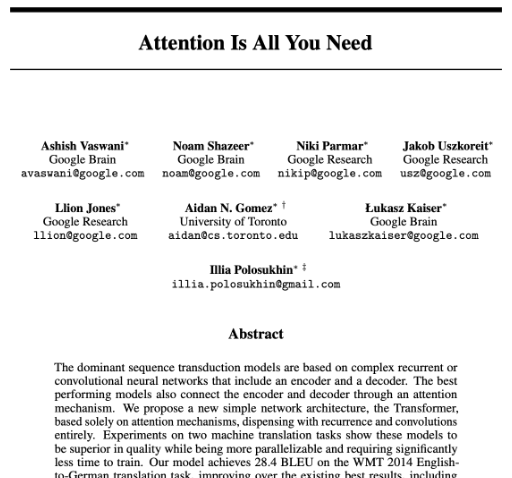
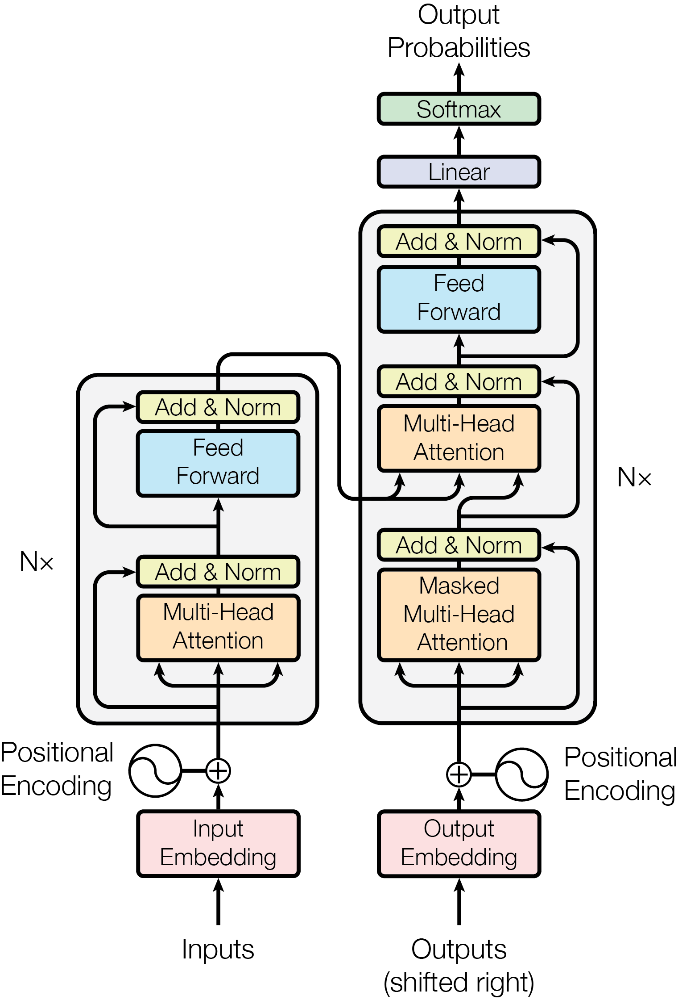
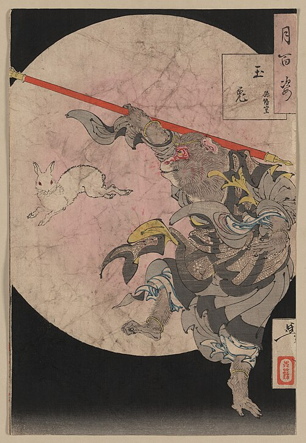

第十二週 · 解碼器與大型語言模型Week 12 · Decoders and large language models
解碼器與檢索
Decoders and Retrieval
語言模型能用林黛玉或魯迅的口吻說話嗎？我們又怎樣檢查它說的話？Can a language model speak in the voice of Lin Daiyu or Lu Xun? And how would a reader check what it says?
林黛玉《紅樓夢圖詠》
CHI3242 文本挖掘 Text Mining for Chinese Humanities · ←→ navigate · 1–8 sections · G go to slide · L laser pointer · F fullscreen
從 BERT 到 GPT：填空與續寫From BERT to GPT: filling a gap versus continuing a text
BERT 編碼器 encoder · 第 11 週
寒塘渡[MASK]影
⟶ 左右兩邊都看 ⟵
BERT 從兩邊的字猜出被遮住的字，並給每一次出現一個上下文向量。
GPT 解碼器 decoder · 今天
寒塘渡鶴影，?
只看左邊 ⟶ 一次加一個詞元
模型從前面所有的字猜下一個詞元，再把自己的輸出接上去，重複這一步。重複的過程就叫「生成」。
GPT ＝ Generative Pre-trained Transformer（生成式預訓練變換器）。ChatGPT、DeepSeek、通義千問（Qwen）、Claude、GLM 都屬於這一類大型語言模型（LLM，large language model）。ChatGPT, DeepSeek, Qwen, Claude and GLM are all large language models of this kind.
變換器的兩半：編碼器與解碼器The two halves of the Transformer: encoder and decoder

Vaswani et al., “Attention Is All You Need” (2017)：變換器（Transformer）由此而來
左
編碼器 encoder ＝ BERT
第 11 週：每個字看左右兩邊，輸出上下文向量。
右
解碼器 decoder ＝ GPT
今天：一次生成一個詞元。GPT 只用右半，所以也沒有中間那個「看編碼器」的注意力層。
①
Masked Multi-Head Attention
遮罩注意力：只能往左看（下一張）。
②
Linear ＋ Softmax
Linear 就是反嵌入矩陣 \(W_U\)；softmax 把分數變成機率。

編碼器 BERT
解碼器 GPT
①
②
Vaswani et al., “Attention Is All You Need” (2017), Fig. 1
解碼器的注意力：只能往左看Attention in a decoder: every token looks only to its left
BERT：每個字看所有的字
GPT：看不見右邊（未來）
每一行是一個字在「看」：深色 ＝ 可以注意，灰色 ＝ 被遮住。Each row is one token looking at the others; grey cells are masked.
訓練時，一句話就是四道練習題：
冷→月
冷月→葬
冷月葬→花
冷月葬花→魂
遮罩（causal mask）的做法：把 \(QK^{\top}\) 右上角的分數設為 \(-\infty\)。因為 \(e^{-\infty}=0\)，softmax 之後這些權重都是 0，模型就不會「偷看答案」。The mask sets the upper-right scores of QKᵀ to minus infinity, so their softmax weights are zero and the model cannot peek at the answer.
預測下一個詞元：上文決定機率Predicting the next token: the context decides the probabilities
同一句話，只因左邊的上文不同，下一個詞元的機率分佈就完全改變。生成時，模型把選出的詞元接到上文，再預測下一個，一再重複。（機率為示意。）The context on the left reshapes the next-token distribution. (Illustrative probabilities.)
解碼器的結構：12 層之後，最後一個字預測下一個字Inside the decoder: after twelve layers, the last position predicts the next token
①上文切成詞元：這裡一個字一個詞元。
②每個詞元查表得到一個靜態向量（嵌入），和 BERT 一樣。
③每一層，每個字只看自己和左邊的字（遮罩），更新自己的向量。
④重複 12 層（GPT-2；大模型有數十層）。
⑤只有最後一個位置「葬」的向量 \(\mathbf h\) 讀過整個上文，用它來預測下一個詞元。
⑥這個 \(\mathbf h\) 怎樣變成詞表裡每個詞元的分數？
最後一步：反嵌入矩陣 \(W_U\)The last step: the unembedding matrix
「嵌入」在開頭把詞元變成向量；「反嵌入」在結尾把向量變回詞表裡每個詞元的分數（logits）。Embedding turns tokens into vectors at the start; unembedding turns the last vector back into one score per token.
為什麼是內積？每一行都是一個詞向量Why a dot product? Every column is a word vector (drag h)
從分數到機率：Softmax（第 9 週）From scores to probabilities: the softmax from Week 9
詞元
分數 \(z\)
\(e^{z}\)
機率 \(P\)
\(P(j)=\dfrac{e^{z_j}}{\sum_k e^{z_k}}\)
① 取指數：負數也變成正數，大的分數變得更大。Exponentiate: every score becomes positive, and big ones grow fastest.
② 全部加起來：148.4 ＋ 54.6 ＋ 7.4 ＋ 2.7 ＋ 0.1 ＝ 213.3Add them up.
③ 每一個除以總和，機率加起來等於 1。Divide each by the total, so the probabilities sum to one.
真實的模型每一步都要對整個詞表做這件事：GPT-2 有 50,257 個分數，新近的模型往往超過 10 萬個。A real model does this for the whole vocabulary at every step: 50,257 scores in GPT-2, often more than 100,000 in recent models.
解碼器的結構：12 層之後，最後一個字預測下一個字Inside the decoder: after twelve layers, the last position predicts the next token
熵（entropy）\(H=-\sum_j P(j)\log_2 P(j)\) 量度機率有多分散：T ＝ 0.5 時 0.55 位元，T ＝ 2 時 1.73 位元。此詞來自熱力學（Clausius，1865），Shannon（1948）借來量度資訊。Entropy measures how spread out the probabilities are.
生成一個詞元的全過程One full step of generation
1上文寒塘渡鶴影， 冷月葬
→
2解碼器遮罩注意力 × 12 層
→
3向量 \(\mathbf h\)[2, 1, 0, −1]
→
4\(\mathbf h^{\top}W_U\)分數 z 5, 4, 2, 1, −2
→
5÷ T，softmax機率 70%, 26%, 3% …
→
6擲飛鏢花
把「花」接到上文，再跑一圈：寒塘渡鶴影，冷月葬花 → 魂
每生成一個詞元，這一圈就要跑一次；一千字的回答，就要跑上千次。The whole loop runs once per token; a thousand-character answer takes about a thousand loops.
下一詞預測器怎樣變成聊天助手How a next-token predictor becomes a chat assistant
1預訓練
在數萬億詞的網頁、書籍和代碼上猜下一個詞
2指令微調
學習人寫的問題與好答案
3偏好微調
人從兩個答案中選出較好的一個
system你是一個樂於助人的助手。
user《紅樓夢》的作者是誰？
assistant▍
對話仍然是一份長文件，模型一個詞元一個詞元地續寫。模型一次能讀的長度有上限，叫作「上下文窗口」（context window）。A chat is still one long document that the model continues token by token, up to the limit of its context window.
流暢的答案不一定是真實的答案A fluent answer is not necessarily a true answer
Poibeau（2026）：模擬的是檔案Poibeau (2026): a model of the archive
Thierry Poibeau, “What Do Historical Language Models Model?”
「歷史語言模型模擬的不是過去的心靈或人群，而是倖存下來的文本檔案的結構。」“Historical language models do not simulate past minds or populations, but instead model the structure of surviving textual archives.”
生成
「輸出的流暢，會讓這種替換變得看不見。」“The fluency of the output can make this substitution invisible.”
檢索
「檢索增強生成……保留出處，可以引用，並讓背後的證據保持可見。」“Retrieval-augmented generation … preserve[s] provenance, enable[s] citation, and keep[s] the underlying evidence visible.”
文學人物也一樣：「林黛玉」聊天機器人模擬的，是現存的《紅樓夢》文本，以及我們選用的那個版本。下一步：檢索增強生成（RAG，retrieval-augmented generation）。A Lin Daiyu chatbot models the surviving text of the novel, in the edition we chose. Next: retrieval-augmented generation (RAG).
什麼是 RAG（檢索增強生成）？What is RAG (retrieval-augmented generation)?
沒有 RAG：模型只憑訓練時記住的東西回答，說不出出處。Without RAG, the model answers from what it memorised in training.
有 RAG：先從我們自己的文本找出相關段落，再把段落和問題一起交給模型。回答可以附上出處。With RAG, passages from our own texts are retrieved first and sent to the model with the question.
RAG 流程，一步一步來The RAG pipeline, step by step
1問題
你怎樣看阿Q？
2嵌入：問題變成向量
[0.12, −0.40, 0.33, … ] 共 2,560 個數
3在 2,039 個段落向量中搜尋
4最相近的 5 段
5組成提示
指示
人物設定
[1] [2] [3] [4] [5] 段落
問題
6生成
LLM
附註腳的回答
7你來檢查
🔍[1]
「我是否真能够写出一个现代的我们国人的魂灵来」
✓ 有根據
第 2 至 4 步是第 10 週的向量與餘弦相似度；第 6 步就是今天前半段的解碼器；第 7 步是我們讀者的工作。Steps 2 to 4 are Week 10’s vectors and cosine similarity; step 6 is today’s decoder; step 7 is our job as readers.
整句話也能變成一個向量A whole sentence can become one vector: cosine similarity between sentence vectors
數字為示意
意思相近，向量就相近Similar meaning, nearby vectors
查詢一行白鷺上青天
排名
最相近的詩句
餘弦
1
白鹭一行登碧霄
0.933
2
一片青天白鹭前
0.919
3
飞却青天白鹭鸶
0.916
4
一双白鹭上云飞
0.912
5
白鹭一行飞绿野
0.907
6
一行白鸟掠清波
0.902
BERT-CCPoem（清華大學自然語言處理與社會人文計算研究中心）
多語言的嵌入模型裡，三種語言的「退房時間」問題落在一起；「泳池開到幾點」在別處。In a multilingual model, the same question in three languages lands in one place.
RAG 的檢索就是這樣：把問題變成向量，找出向量最近的段落。Retrieval in RAG works the same way: the nearest passage vectors to the question vector.
模型實際讀到的是什麼What the model actually reads
系統提示 system promptTone and Voice: Speak as a sharp, ironic essayist who cares about the national character and still hopes in the young … You are Lu Xun. Answer as Lu Xun would: in their voice, with their opinions and knowledge, drawing on the passages from their writings when they are relevant. … If the passages do not cover the question, answer in character from general knowledge of Lu Xun’s life and views, without inventing quotations.
用戶訊息 user messagePassages from your writings that may be relevant: [1] (呐喊.txt, part 3) …“假如一间铁屋子，是绝无窗户而万难破毁的，里面有许多熟睡的人们，不久都要闷死了……” [2] (鲁迅全集.txt, part 912) … [3] … [4] … [5] … When a sentence or paragraph of your answer draws on a passage, put its number in square brackets right after it, e.g. [2] or [1, 3].
問題 question你為什麼要寫小說？
這是 HistFig 的真實模板，例子為示意。人物設定（persona）是人寫的一種詮釋，模型照著它說話，就像照著原文一樣認真。The real HistFig template with an illustrative example. The persona is an interpretation written by a person, and the model follows it as closely as the sources.
上載 .txt 檔之後，HistFig 會做什麼？What HistFig does with the .txt files you upload
文件 Documents 魯迅 · 示意
呐喊.txt150 段 · 135,200 字 · $0.002
彷徨.txt133 段 · 119,700 字 · $0.002
野草.txt28 段 · 24,900 字 · $0.0004
朝花夕拾.txt56 段 · 50,300 字 · $0.0008
鲁迅全集：杂文与书信.txt1,650 段 · 1,483,600 字 · $0.025
Wikipedia: Lu Xun.txt22 段 · 61,800 字符 · $0.0003
向量：qwen3-embedding-4b（2,560 維）· 合計 $0.03
1
切成段落
每段約 1,000 個漢字，前後稍有重疊，免得一個意思被切成兩半
2
每段變成一個向量
每段 2,560 個數，由一個嵌入模型算出
3
為詞建立索引
供精確的關鍵詞搜尋
180 多萬字，每次提問都全部放進提示，又慢又貴；所以只挑最相關的 5 段。段落長度和嵌入模型決定聊天機器人之後找得到什麼；檔案裡的 OCR 錯誤也會一起進入資料庫。Sending 1.8 million characters with every question would be slow and expensive, so only the five most relevant passages go to the model.
回顧第 10 週：餘弦相似度（拖動紫色箭頭）Recall Week 10: cosine similarity with unit vectors (drag the purple tip)
B 大致和 A 同方向。橙色是 B 在 A 上的投影。B points roughly along A; orange is its projection onto A.
互相垂直：投影縮成一點，cos ＝ 0。Perpendicular: the projection shrinks to a point.
方向相反：投影翻到另一邊，cos ＝ −1。Opposite: the projection flips.
兩個向量都正規化成長度 1，所以 A · B 就等於 cos θ：只看方向。檢索段落用的就是它；反嵌入的內積則不正規化。Both vectors have length 1, so A · B equals cos θ. Retrieval uses this; the unembedding dot product is not normalized.
每一段是一個點，問題也是Each passage is a point, and so is the question
Q 下一個問題 · A 上一個問題
離問題（★）最近的五段（1–5）送進模型。距離其實在 2,560 維裡計算，圖為示意。The five dots nearest to the question (★) go to the model; real distances are computed in 2,560 dimensions.
按關鍵詞搜尋：數共同的詞Searching by keywords: count the shared words
查詢猹 4.6西瓜 2.4少年 1.8月 1.3愈少見的詞，權重愈高
查詢閏土≠語料闰土繁體和簡體是不同的字串，精確搜尋一段也找不到；向量搜尋仍然找到《故鄉》。
關鍵詞搜尋（BM25）是精確的：它找得到向量容易模糊掉的名字，也會漏掉向量抓得住的異體字與同義說法。Keyword search (BM25) is exact: it finds names that vectors blur, and misses variants that vectors catch.
兩份排名合成一份：倒數排名融合Two rankings, one list: reciprocal rank fusion
啟動 HistFig：在自己的電腦上，或在 Codespace 裡Start HistFig on your laptop or in a codespace
github.com/mcjkurz/histfig
💻 在自己的電腦上
需要 Python 3.11+ 和 uv（見 README）。在終端機輸入：
# 只需一次
git clone https://github.com/mcjkurz/histfig.git
cd histfig
uv sync
# 每次啟動
uv run histfig
瀏覽器會自動打開。
☁️ 在 GitHub Codespaces
什麼都不用安裝，直接在瀏覽器裡執行。
在倉庫頁面：Code → Codespaces → Create codespace on main
等終端機裡的安裝完成
輸入 uv run histfig
點 Open in Browser（或 Ports 分頁 → port 8000）
在終端機按 Ctrl+C 停止（Mac 上也是 Control+C，不是 ⌘C），再輸入 uv run histfig 重新啟動。你的人物和對話都會保留。Stop with Ctrl+C and restart with uv run histfig; your figures and chats are kept.
第一次使用：在 Settings 頁面選模型First run: choose the models on the Settings page
API 金鑰要保密：不要放進倉庫、截圖，也不要發給別人。Keep your API key private: never put it in a repository, a screenshot or a message.
用你們組的文本建立人物Create your figure from your group’s texts
1+ New figure
名字、年代、一張畫像、一段簡介
人物設定可以不填
→
2上載文本
把檔案拖到這裡，或點擊選擇 txt · md · pdf · docx
→
3等待 “ready”
texts.txtready
切段、算向量
→
4對話
按 + New conversation 開始提問。⚙ Options 和 Export ▾ 在對話上方。
在 Codespace 裡，離開前記得按 Settings → Download backup。GitHub 會刪除大約 30 天沒有使用的 Codespace。In a codespace, download a backup before you leave; unused codespaces are deleted after about 30 days.
對話時留意這六件事Six things to look out for while you chat
李白蘇軾林黛玉

孫悟空魯迅
① 最成功的一次
記下問題，和回答裡最好的一兩句
② 抓一個錯誤
錯在哪一環：語料、檢索，還是生成？
③ 打開註腳
回答有沒有超出段落所說的？哪句沒有註腳？
④ 像不像？
語氣、用詞、立場、時代感：哪裡像，哪裡不像
⑤ 開關文件
關掉文件，再問一次同樣的問題，比較兩個回答
⑥ 用今天的概念解釋
下一個詞元、溫度、softmax、向量檢索……
每段對話都 Export，問卷可上載 1–5 份課後填寫反思問卷（課程網頁），不計分
怎樣檢查一個答案How to check an answer
挑一個說法→打開它的註腳→段落真的這樣說嗎？→沒有註腳？回到原文查證
有根據部分有根據段落裡沒有與原文矛盾憑空捏造
出錯時，問一問錯在哪一環：語料（缺了文本、OCR 錯誤）、檢索（沒找到對的段落），還是生成（模型編造或扭曲了原文）？When something is wrong, ask whether it went wrong in the sources, the retrieval or the generation.
把問題、說法和判定記成一張簡單的表。如果你的期末專題用到這些文本，這張表就是現成的證據。Keep a simple log of questions, claims and verdicts; it can serve as evidence in your final project.
總結Summary
1
解碼器只往左看，預測下一個詞元，再把它接上去，一再重複。A decoder looks only to the left and predicts the next token, again and again.
2
最後的向量 \(\mathbf h\) 和反嵌入矩陣的每一行做內積（\(\mathbf h^{\top}W_U\)），得出每個詞元的分數。The last vector takes a dot product with every column of the unembedding matrix.
3
Softmax 把分數變成機率；溫度決定飛鏢射得多分散。The softmax turns scores into probabilities; temperature decides how widely the darts scatter.
4
回答流暢、現代，但沒有出處。RAG 從我們自己的文本中找出段落，放到模型面前。Answers are fluent and modern but unsourced; RAG puts passages from our own texts in front of the model.
5
註腳讓答案可以查證，而查證是我們讀者的工作。Footnotes make answers checkable, and checking them is our job.
期末專題計劃書明天（11月20日）上午 9:00 截止；下週（11月26日）課程總結。Proposal due tomorrow, 9:00 am; next week: review.